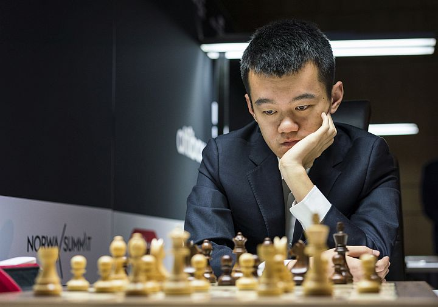

Ding Liren rođen je 24.10.1992.Ding je kineski velemajstor , te najviše rangirani šahist u povijesti Kine , te trostruki prvak Kine.Pobijedio je na Grand chess tour pobijedivši Maxime Vachier Lagrawe-a.Također je osvojio i Sinquefield Cup 2019 , pobjedivši Magnusa Carlsena. U lipnju 2016.njegov blitz rating bio je 2875 što je najveći blitz rating ikad zabilježen.
